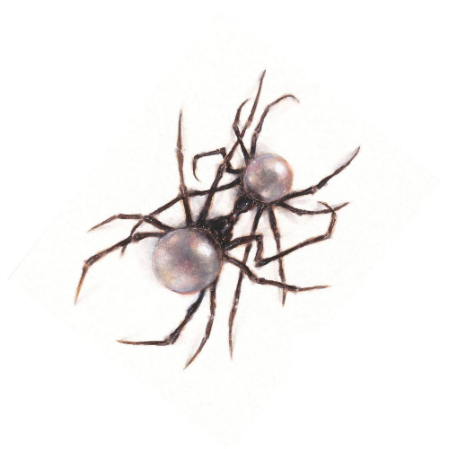

Meus albuns favoritos

Scarlet - Doja Cat
Scarlet é o quarto álbum de estúdio da rapper e cantora estadunidense Doja Cat, lançado em 22 de setembro de 2023, através da Kemosabe e RCA Records. Inspirada pela sua desilusão com a música pop e insatisfação com críticos musicais questionando seu status como rapper, Doja Cat decidiu criar uma sequência "masculina" para seu terceiro álbum de estúdio, Planet Her (2021). Musicalmente, o álbum é predominantemente centrado nos gêneros de hip hop e R&B, marcando uma leve mudança em relação aos sons pop do seu antecessor.